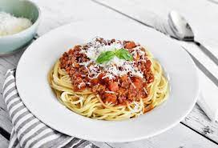

Spaghetti Bolognese

Ingrediënten
- 1 middelgrote ajuin
- 250g winterpeen
- 1 stengel bleekselder
- 2 eetlepels milde olijfolie
- 25g ongezouten roomboter
- 1 eetlepel tomatenpuree
- 500g mager rundergehakt
- 90ml runderbouillon
- 800g tomatenblokjes in blik
- 350g spaghetti
Bereiding
- Snipper de ui. Schil de winterpeen en snijd in plakjes. Snijd de bleekselderij in boogjes. Verhit de olie met de boter in een pan, voeg de ui, peen en bleekselderij toe en bak 5 min. op middelhoog vuur. Voeg de tomatenpuree en het gehakt toe en bak gedurende 5 min.
- Voeg de bouillon en tomatenblokjes erdoor. Breng op smaak met peper en eventueel zout. Breng aan de kook en laat de saus met de deksel op de pan 30 min. op laag vuur sudderen. Roer af en toe.
- Kook ondertussen de spaghetti volgens de aanwijzingen op de verpakking. Verdeel de spaghetti over de borden en schep de saus erover.
- Tip: voeg geen kaas toe want de bolognese-saus is op zich al lekker en kaas suckt.